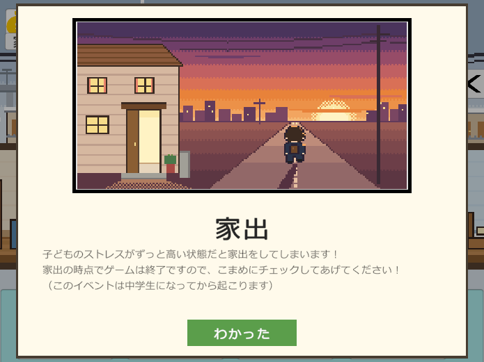
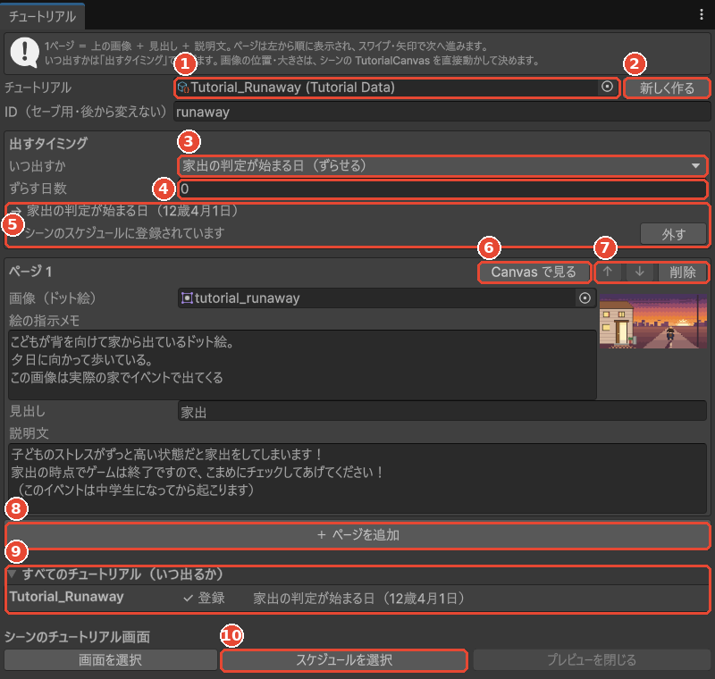
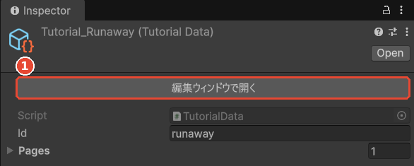
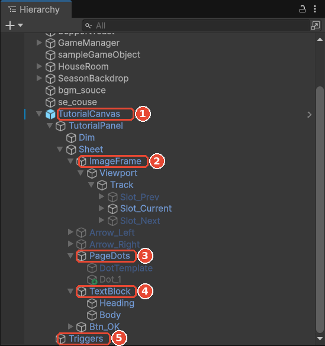
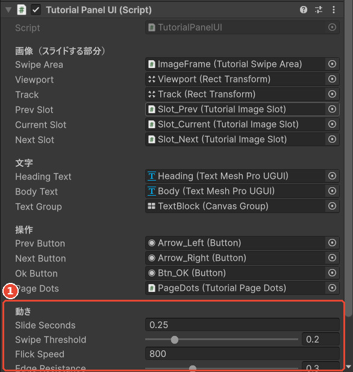
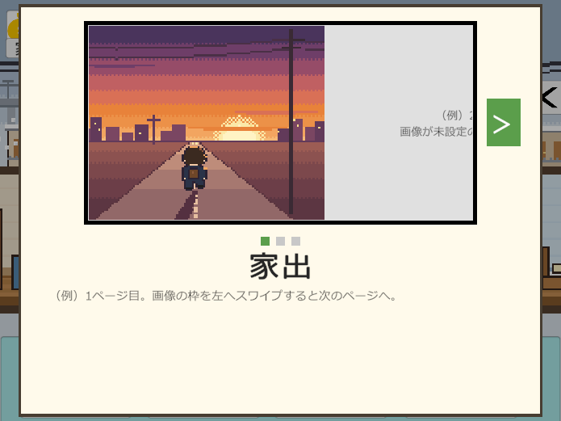
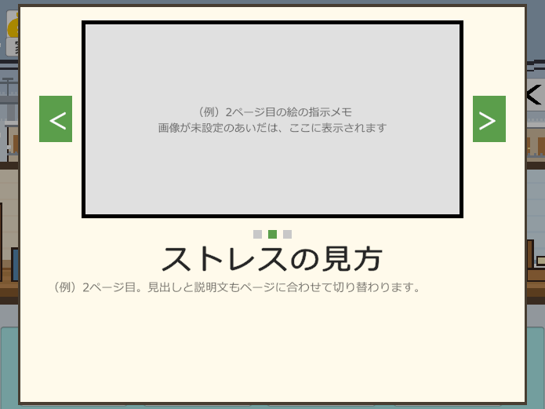
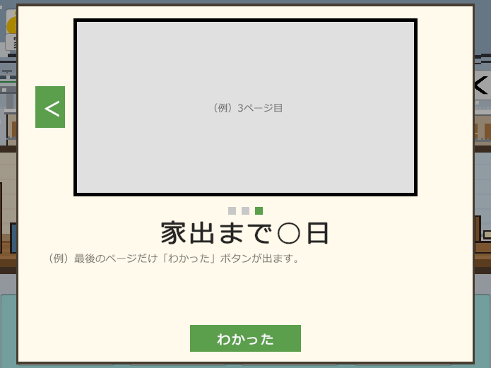
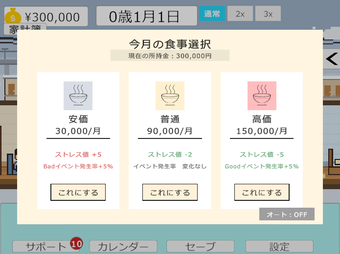

子ども育成シミュレーション ／ Unity エディタ拡張
上に画像、下に見出しと説明文。画像を横にスワイプすると次のページへ進むチュートリアル画面を、スクリプトを書かずに作ったり直したりするための手引きです。

中身（文と絵、いつ出すか）、画面（配置）、出す係が別々なので、文やタイミングを直すだけなら画面には触らず、画面を直しても中身は消えません。
Assets/Yamaguchi/Data/Tutorial/
「出すタイミング」とページのリスト。1ページ＝画像・絵の指示メモ・見出し・説明文。アセットを1つ足せば、チュートリアルが1本増えます。
Main_test2 の Hierarchy
全チュートリアル共通の画面。位置・大きさ・色は Canvas 上で直接いじります。
TutorialCanvas/Triggers
各チュートリアルの「出すタイミング」を毎日確かめて、条件を満たした日に1回だけ出す。チュートリアルごとのスクリプトは要りません。
| やりたいこと | 場所 |
|---|---|
| 文・画像を直す | メニュー「子育て › チュートリアル › 編集ウィンドウ」でチュートリアルを選ぶ |
| いつ出すかを決める | 同じく編集ウィンドウの「出すタイミング」 |
| 全部がいつ出るかを見る | 編集ウィンドウの下の「すべてのチュートリアル（いつ出るか）」 |
| ページを足す・並べ替える | 同じく編集ウィンドウ（「＋ ページを追加」「↑ ↓」「削除」） |
| 新しいチュートリアルを作る | 編集ウィンドウの「新しく作る」 |
| 再生せずに見る | 編集ウィンドウの各ページの「Canvas で見る」 |
| 再生中に本番どおり見る | 再生中に編集ウィンドウの「今すぐ出す（テスト）」 |
| 画像の枠・文字の位置や大きさ | Hierarchy の TutorialCanvas › TutorialPanel の中を直接動かす |
| スライドの速さ・反応のしやすさ | TutorialPanel の Inspector「動き」 |
| ページの点の色・形 | PageDots の Inspector と、見本の点 DotTemplate |
メニュー「子育て › チュートリアル › 編集ウィンドウ」を開くか、Project で Tutorial_Runaway などのアセットを選んで Inspector の「編集ウィンドウで開く」を押します。


1 アセットを選ぶと、Inspector の一番上に「編集ウィンドウで開く」が出ます。
Inspector の Pages を開いて直接書き換えても同じですが、並べ替えやプレビューは編集ウィンドウのほうが楽です。
runaway）は「もう見た」をセーブするときの名前です。変えると、見たはずのチュートリアルがもう一度出ます。Tutorial_Food）。保存先は Assets/Yamaguchi/Data/Tutorial/。food）。空のままならファイル名が使われる。これだけで、その日になると自動で出ます。表にない場面（ボタンを押したとき、イベントが起きたとき など）で出したいときは、タイミングを「コードから呼んだときだけ」にして、その場面のスクリプトから1行呼びます。
// まだ見ていなければ出す（「見た」はセーブに入る。二度は出ない）
TutorialManager.I.ShowOnce(tutorialData);
// 見たかどうかに関係なく出す（設定画面から見返す、など）
TutorialManager.I.Show(tutorialData);目的に合わせて3つの見方があります。
配置や文の長さを直すとき
スワイプ・時間停止・「わかった」まで本番どおり見るとき
決まった日に本当に出るかを確かめるとき
配置はすべて Canvas 上のオブジェクトで決まっています。コードでは位置を決めていないので、RectTransform を動かせばそのまま反映されます。

TutorialManager が付いている。DotTemplate を複製して並べる。見本の大きさや画像を変えると全部の点が変わる。TutorialScheduler が付いている。自動で出すチュートリアルの一覧（登録は編集ウィンドウから）。
TutorialPanel の Inspector| 項目 | いまの値 | 意味 |
|---|---|---|
| Slide Seconds | 0.25 | ページが滑りきるまでの秒数 |
| Swipe Threshold | 0.2 | 枠の幅の何割ドラッグしたら次へ進むか |
| Flick Speed | 800 | この速さ以上ではじけば、短くても次へ |
| Edge Resistance | 0.3 | 最初・最後のページでさらに引っぱったときの動きやすさ |
| Text Fade Seconds | 0.2 | ページが変わったとき文字がふわっと出る秒数 |
3ページの見本で、左へスワイプしたときの様子です。指（iPad）でもマウスのドラッグでも動きます。矢印ボタンやキーボードの ← → でも進めます。



画像が未設定のページは、灰色の差し替え枠に「絵の指示メモ」が出ます（②③）。ドット絵ができたら編集ウィンドウで Sprite を入れるだけで、①のように絵に変わります。
編集ウィンドウの「いつ出すか」で選べる種類です。どれも、条件を満たした最初の日に1回だけ出ます。
| いつ出すか | 設定する欄 | 使いどころの例 |
|---|---|---|
| ゲームを始めてすぐ | なし | 操作のしかた、スライダーの意味 |
| 決まった年齢の日 | ○歳○月○日 | 小学校入学（6歳4月1日）で塾・習い事の説明 |
| 家出の判定が始まる日（ずらせる） | ずらす日数（−30 で30日前） | 家出（いまは当日＝12歳4月1日） |
| 子どものストレスが ○ 以上になったら | ストレス、判定を始める日 | ストレスが危険域（71〜）に入ったときの注意 |
| お金が ○ 円より少なくなったら | 金額、判定を始める日 | 貯金が減ってきたときの支援制度の案内 |
| コードから呼んだときだけ | なし（スクリプトで ShowOnce） | 表にない場面。ボタンやイベントの直後など |
TutorialTiming.cs の種類に1つ足し、TutorialScheduler.IsDue に判定を1行足します。チュートリアルごとのスクリプトは作りません。
ShowOnce のとき）。「見た」はセーブに入るので、続きから遊んでも出ない。RunawayWatcher の開始年齢を変えると一緒に動く。